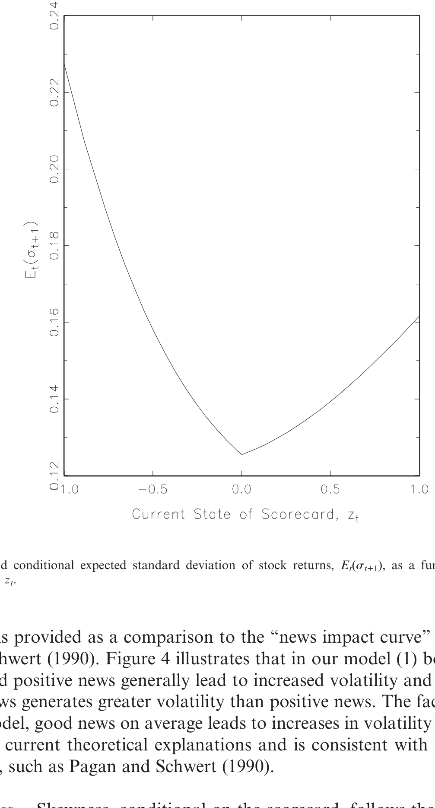
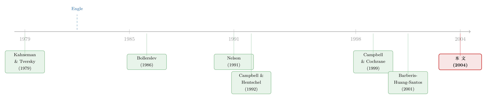

GARCH 从哪儿来？——把「波动会扎堆」这件事，还给投资者的情绪
本文读的是 McQueen & Vorkink (2004, Review of Financial Studies)：他们写下一个带「心理记分牌」的偏好型资产定价模型，让投资者在被意外收益「惊扰」之后，暂时对新闻更敏感，于是即便新闻本身是 i.i.d. 的，股票收益也会内生地长出 GARCH 式的波动聚集（volatility clustering），并且复现「坏消息比好消息更能放大波动」的不对称。
1 一个我们天天在用、却说不清来历的东西
做实证金融的人,对一个词大概熟到可以闭着眼睛敲出来:GARCH。
只要你处理的是收益率序列,几乎没有哪篇论文不会在某个角落写上一句「我们用 广义自回归条件异方差 (generalized autoregressive conditional heteroskedasticity, GARCH) 来刻画波动」。它太好用了:波动会扎堆——平静的日子连成一串平静,动荡的日子又连成一串动荡——而 GARCH 恰好能把这种「波动的记忆」装进一个简洁的递归式里。从 Engle (1982) 的 ARCH 到 Bollerslev (1986) 的 GARCH,我们对「波动如何聚集」的统计刻画,可以说精致到了令人叹为观止的地步。
但请你停下来想一个更笨、也更要命的问题:波动为什么会扎堆?
我们对「波动聚集长什么样」了如指掌,对「波动聚集从哪儿来」却几乎一无所知。这正是这篇论文标题里那个挑衅式的发问——Whence GARCH?(GARCH 从何而来?)。作者 McQueen 和 Vorkink 一上来就点破了这层尴尬:我们的统计知识 (statistical knowledge) 令人印象深刻,我们的理论知识 (theoretical knowledge) 却「显得贫乏 (paltry)」。
那么,教科书式的默认答案是什么?
默认解释是:新闻本身就是扎堆来的。仿佛有一个「外生的新闻供应商」,有些时段加班加点地放消息,另一些时段则跑去度假。波动之所以聚集,只是因为基本面消息聚集而已。
这个解释听上去顺理成章,却经不起推敲。一来,宏观新闻的发布是高度规律的(就业数据、CPI 都有固定日历);二来,Schwert (1989) 以及 Pagan & Schwert (1990) 早就发现,股票收益的波动和经济基本面之间,关系其实很弱。把波动聚集全推给「基本面新闻的节奏」,等于把问题踢给了一个我们看不见、也对不上账的黑箱。
于是,一个自然的问题是:能不能让波动聚集从市场内部长出来,而不是外生地假设进去?
2 已有的两条路,和它们各自的「半截」
在 McQueen 和 Vorkink 之前,想给波动聚集找一个「内生」来源的人,大致走了两条路。
第一条路,是异质交易者 (heterogeneous traders)。 Brock & LeBaron (1996) 证明,如果不同交易者调整策略的时间尺度比交易本身慢,波动就会自相关;Cao, Coval & Hirshleifer (2002)、Kelly & Steigerwald (1999) 这些工作,则让「场外观望的投资者」陆续入场,从而制造出时变波动;Peng & Xiong (2001) 让分析师消化新闻的速度变化,也能凑出 GARCH 样的收益。这些模型有一个共同的漂亮之处:新闻的生成是 i.i.d. 的,但新闻通过交易进入价格的过程被聚集了。
可惜,作者指出,这条路有三处「半截」:其一,摩擦和反馈通常是对称的,解释不了好消息/坏消息的不对称;其二,市场摩擦往往是短命的,只能解释高频数据里那种转瞬即逝的聚集,管不了 Ding & Granger (1996)、Bollerslev & Mikkelsen (1996) 发现的长记忆;其三——也是最关键的——Engle & Lee (1999) 和 Kim, Morley & Nelson (2003) 证明,真正能进入风险溢价 (risk premium) 的,只有波动聚集里那个长期成分。短命的摩擦,定不了价。
第二条路,是杠杆与学习。 Black (1976)、Christie (1982) 的杠杆模型预测坏消息后波动更高(公司杠杆被动抬升),David (1997)、Veronesi (1999) 的状态不确定性模型则用贝叶斯学习来制造条件异方差。但它们都栽在同一处:它们都错误地预测好消息之后波动会下降,这和「好消息、坏消息都抬高波动」的典型事实(stylized fact)相悖。
把这几条「半截」叠在一起看,McQueen 和 Vorkink 要找的,其实是一个能同时做到三件事的机制:(1) 在低频上制造聚集;(2) 复现好/坏消息的不对称;(3) 让这种聚集天然就被定价。
3 真正关键的一步:让投资者「被惊扰」之后更敏感
故事在这里转了个弯。
既然偏好型模型 (preference-based model) 已经能解释长期可预测性和过度波动,为什么不让它顺手把波动聚集也解释了?作者的出发点,是 Barberis, Huang & Santos (2001,下称 BHS) 那篇名作《Prospect Theory and Asset Prices》。
BHS 让投资者不只从消费 (consumption) 中获得效用,也从财富的波动中获得效用;而且他们会损失厌恶 (loss aversion)——亏一块钱的痛,大于赚一块钱的爽——并且持有一块「心理记分牌 (mental scorecard)」,记录过往的投资战绩:输多了就变得更厌恶风险。(关于前景理论如何被搬进资产定价的逻辑,可参见《前景理论想「废掉」均值-方差,却反被它收编》与《用真金白银投出来的前景理论》。)
但 BHS 的记分牌只调节风险厌恶的水平。McQueen 和 Vorkink 做了一处看似微小、却点石成金的改动:
记分牌不只决定投资者有多厌恶风险,还决定他们对新闻有多敏感。当一笔意外收益把记分牌「惊扰」(perturb) 之后,投资者会变得暂时格外留意、格外敏感;然后慢慢习惯新的财富水平,敏感度再缓缓回落到常态。
为什么这一改就够了?直觉是这样的:一笔大冲击把投资者推离了他「习惯的」财富水平,他被惊动了、警觉了,于是接下来对每一条新闻都反应更剧烈——这本身就放大了下一期的波动;而这种警觉状态衰减得很慢,所以放大效应会持续好几期。新闻还是那个 i.i.d. 的新闻,但投资者「接收新闻的增益旋钮」被一次冲击拧大了,且需要时间才拧得回去。波动,就这样一期接一期地扎了堆。
作者还很坦诚地承认:这条行为假设是新的,所以他们专门搬来两支心理学文献给它撑腰——Kahneman (1973) 的注意力理论(突然、强烈的刺激会触发「定向反应」,提前调动认知资源去迎接后续信息),以及 Hilgard & Marquis (1940) 起源的敏化 (sensitization) 理论(一次刺激会提高对后续刺激的反应性,而反复刺激则带来习惯化)。他们甚至打了个绝妙的比方:一位密歇根的教授冬天飞去亚利桑那开会,初来时短袖出门、天天盯着天气预报、不停调温控——这正是「适应 + 注意 + 敏化」三件事在一个被温差惊扰的人身上的合体。
4 模型:把「记分牌」一步步写成方程
这是一篇有模型的论文,我们值得把它的骨架一节一节拆开。模型是一个 Lucas (1978) 式的交换经济:同质、无限存活的代理人,在消费 \(C_t\)、风险资产 \(S_t\)、无风险资产 \(B_t\) 之间分配财富。
第一步,效用函数。 跟 BHS 一样,代理人既从消费、也从未预期到的财富波动 \(F(W_{t+1})\) 中获得效用:
$$ \max\; E_0 \sum_{t=0}^{\infty}\left[\, \delta^t U(C_t) + b_0\,\bar{C}_t^{-\gamma}\,\delta^{t+1} F(W_{t+1})\,\right] $$
这里 \(\delta\) 是主观贴现率,\(b_0>0\) 控制「财富效用」相对「消费效用」有多重要——当 \(b_0=0\),它就退化成标准的消费型模型。作者特意选了「消费/股利」两收益经济,因为历史上消费增长和股票收益的相关性很弱:一次大的股价波动几乎不动消费,所以靠消费型风险厌恶根本掀不起后续的股票波动;只有把风险与损失厌恶定义在金融财富上,一次股价大动才能诱发足够大的厌恶与敏感度变化,进而搅动后续波动。
第二步,什么叫「财富波动」。 财富的得失是相对于预期来定义的:
$$ W_{t+1} = S_t X_{t+1}, \qquad X_{t+1} = R_{t+1} - E_t(R_{t+1}) $$
\(X_{t+1}\) 就是「收益冲击 (return shock)」。收益高于预期,投资者享受财务效用;低于预期,则承受财务负效用。\(F(W_{t+1})\) 的符号,完全取自 \(X_{t+1}\)。
第三步,财务效用与风险厌恶。 关键的 \(\lambda\) 函数登场:
$$ F(W_{t+1}) = \lambda(z_t, X_{t+1})\, W_{t+1} $$ $$ \lambda(z_t, X_{t+1}) = \begin{cases} k\,(a_0 - a_1 z_t), & X_{t+1} < 0\\[4pt] a_0 - a_1 z_t, & X_{t+1}\ge 0 \end{cases} $$
这里 \(k>1\) 是损失厌恶:亏损那一支被 \(k\) 放大(论文取 \(k=1.5\),即一笔损失对效用的冲击比同样大小的收益大 50%)。\(a_1\) 则是记分牌依赖:经历一串差收益后,\(z_t\) 为负且绝对值大,\(\lambda\) 变得又正又大,得失都被感受得更强烈——也就是说,亏过之后更厌恶风险。损失厌恶来自 Kahneman & Tversky (1979) 的前景理论,记分牌依赖则对应 Thaler & Johnson (1990) 的「赌资效应 (house money effect)」。
第四步——也是这篇论文的灵魂——记分牌的运动定律。 这是全文唯一真正「新」的方程,我们用一个带标注的形式把它讲透:
把这四步连起来,机制就一目了然了。在 BHS 里,\(h(\cdot)\) 是个常数,记分牌只是被动地记账;而在这里,\(h(z_t)=a_2|z_t|+a_3\) 让敏感度本身随记分牌的绝对值上升。一旦 \(|z_t|\) 因为一次大冲击而变大,下一期同样大小的新闻 \(X_{t+1}\) 就会更猛烈地推动记分牌,从而把高波动状态一期一期地传下去。由于 \(\phi\) 让 \(|z_t|\) 缓慢衰减回零,这种放大效应是持久的——正好对上了那个「能被定价」的低频成分。
下面这张图刻画的,正是这条记分牌运动定律的形状。

Figure 5: is related to the law of motion for the scorecard. When the
第五步,均衡定价。 由于 \(z_t\) 是唯一的状态变量,我们得到一个单因子马尔可夫均衡。对 (1) 式求一阶条件,风险资产的欧拉方程 (Euler equation) 为:
$$ 1 = \delta\, E_t\!\left[\left(\frac{C_{t+1}}{C_t}\right)^{-\gamma}\!\big(R_{t+1} + F'(W_{t+1})\big)\right] $$
它有标准的解读:此刻少消费一单位、拿去投资的边际效用成本,应等于下期卖出这笔投资所得的边际效用收益——只不过在这个模型里,卖出所得既生消费效用,又生财务效用。把财务效用的导数 \(F'(W_{t+1})=\lambda(z_t,X_{t+1})[R_{t+1}-E_t(R_{t+1})]\) 代回去并整理,就得到熟悉的定价核形式:
$$ 1 = E_t[m_{t+1}R_{t+1}], \qquad m_{t+1} = k_t\!\left[\left(\frac{C_{t+1}}{C_t}\right)^{-\gamma} + \lambda(z_t, X_{t+1})\right] $$
注意这个定价核 \(m_{t+1}\) 多出来的那一块 \(\lambda(z_t,X_{t+1})\):风险溢价主要由财务效用与损失厌恶生成,而不是靠把消费的风险厌恶系数 \(\gamma\) 抬到天上去。这带来一个标准模型梦寐以求的组合——无风险利率既低又稳:
$$ R_{f,t+1} = \frac{1}{\delta\, E_t\!\left[\left(\dfrac{C_{t+1}}{C_t}\right)^{-\gamma}\right]} $$
(这正是 Mehra & Prescott (1985) 的无风险利率,在本模型里它是常数),而股权溢价却可以很高。把 (8) 式乘 \(P_t\)、除 \(D_t\),最终得到价格/股利的递归式:
$$ \frac{P_t}{D_t}(z_t) = E_t\!\left[ m_{t+1}\left(\frac{P_{t+1}}{D_{t+1}} + 1\right)\frac{D_{t+1}}{D_t} \right] $$
模型没有解析解,作者数值求解。但定性直觉已经呼之欲出。
为什么会有不对称? 设投资者记分牌恰在均值零。一则坏的股利消息构成「三重威胁 (triple threat)」:消息本身压低价格;它推高风险厌恶,价格再跌;它还抬高了对后续新闻的敏感度,预期波动上升,而更高的预期波动通过波动反馈 (volatility feedback) 再次压价。三股力量叠加,价格大幅下挫。反过来,一则好消息只是「双重威胁」——冲击本身被随之而来的风险厌恶下降所放大,但这份涨势又被预期波动上升所抵消。于是,尽管记分牌对正负冲击的敏感度是对称的 (\(h\) 里是 \(|z_t|\)),模型却产出了不对称的价格反应——坏消息后的下跌,大于好消息后的上涨。这和 Nelson (1991) 的实证完全吻合。
这一步,正是本文相对 Campbell & Hentschel (1992) 的妙处:Campbell & Hentschel 把「新闻聚集」外生塞进去,再内生地解释不对称;而 McQueen 和 Vorkink 连聚集本身也内生化了——不是预设新闻扎堆,而是让投资者在被惊扰时变得敏感,从而亲手把收益搅成了扎堆的样子。
5 把模型「逼上法庭」:可证伪的预测与检验
作者很清醒地引用了 Shefrin & Statman (1994) 的警告:偏好模型几乎能解释任何东西,要想有用,就必须能被证伪 (falsify)。
所以他们没有停在「模型能复现典型事实」这一步——那只是「事后对花」。他们逼着模型吐出超出那些原始事实之外的、新的可证伪预测,再像 Campbell & Hentschel (1992) 那样把预测拿去 U.S. 股票数据上检验。核心的可检验含义是:记分牌 \(z_t\) 应当与条件波动率、条件偏度系统地挂钩——具体说,记分牌的绝对值越大(投资者越被惊扰),后续条件波动应越高;而记分牌的符号应当与条件偏度相联系。
结果是:模型关于条件波动率与偏度的预测得到了数据支持,关于超额收益的预测则只得到有限支持。换句话说,这把「行为之尺」量波动和偏度颇准,量收益则差强人意——作者对此并不遮掩。
6 文献脉络
把这条线索摊开来看,会很清楚地看到两股河流在 2004 年汇合。
一股是波动率建模的统计河流:Engle (1982) 的 ARCH 开了源,Bollerslev (1986) 的 GARCH 把它发扬光大,Nelson (1991) 用 EGARCH 抓住了好/坏消息的不对称,Engle & Lee (1999) 又把波动拆成短期与长期两个成分——这条河越流越精致,却始终没回答「为什么」。
另一股是偏好/行为定价的理论河流:从 Mehra & Prescott (1985) 的股权溢价之谜出发,Campbell & Cochrane (1999) 用「习惯 (habit)」给出消费型的解释,而 Kahneman & Tversky (1979) 的前景理论则催生了 Barberis, Huang & Santos (2001) 把损失厌恶与心理记分牌搬进资产价格。

McQueen & Vorkink (2004) 站在两河交汇处:它把 BHS 的偏好框架往前推了一步(让记分牌不仅调风险厌恶、还调新闻敏感度),又把 Campbell & Hentschel (1992) 的波动反馈往回拉了一步(把外生的「新闻聚集」内生化)。它给统计河流那个悬而未决的「为什么」,递上了一份偏好型的答案。(关于「收益的不对称」如何独立于模型地被度量,可参见《涨时各走各的,跌时一起跳水》;关于波动与风险溢价那段缠绕已久的关系,可参见《收益与风险,到底是「正相关」还是「负相关」?》。)
7 评论与延伸(Q&A + 研究方向)
(a) 几个可能的疑问
Q:这跟 BHS 到底差在哪?不就是多了一个参数吗?
差别虽小,方向却根本不同。BHS 的记分牌只调风险厌恶水平,\(h(\cdot)\) 是常数,所以它能解释长期可预测性和过度波动,却产生不了条件波动的聚集。本文让 \(h(z_t)=a_2|z_t|+a_3\),使敏感度随记分牌绝对值上升——这一项才是「被惊扰→更敏感→波动扎堆」机制的引擎。一个参数,换来的是一整类新的可证伪预测。
Q:既然记分牌对正负冲击的敏感度是对称的,不对称又从哪来?
不对称不在 \(h\) 里,而在定价里。坏消息是「三重威胁」(消息本身 + 风险厌恶上升 + 敏感度上升经波动反馈压价),好消息是「双重威胁」且涨势被预期波动上升抵消。对称的敏感度,经过波动反馈这道「不对称的放大器」,产出了不对称的价格反应。这是 Campbell & Hentschel (1992) 反馈逻辑的继承。
Q:为什么非要把效用定义在财富上,而不是直接让消费的 \(\gamma\) 时变?
因为消费增长和股票收益的历史相关性太弱。一次股价大动几乎不影响消费,也就动不了「绑在消费上的」风险厌恶,自然掀不起后续股票波动。把风险与损失厌恶挂在金融财富上,股价的一次大动才能诱发足够大的厌恶与敏感度变化——这是机制能跑起来的前提。
Q:这跟杠杆模型、Veronesi/David 的学习模型比,强在哪?
强在「好消息」这一侧。杠杆模型 (Black 1976; Christie 1982) 和状态不确定性模型 (David 1997; Veronesi 1999) 都错误地预测好消息后波动下降;本文因为「好/坏消息都抬高敏感度」,能让两侧都升波动,只是幅度不对称——这才对上典型事实。
Q:模型对收益的预测只得到「有限支持」,是不是说机制有问题?
不必这么悲观,但要诚实。波动和偏度的预测被数据支持,说明「敏感度时变」这条线是真的抓住了什么;收益预测偏弱,可能是因为风险溢价里掺了太多其他来源(参与成本、流动性等),单靠记分牌一个状态变量解释不全。这恰恰是把模型「逼上法庭」的价值:它没有假装自己什么都对。
Q:它能解释波动的「长记忆」吗?
部分能。\(\phi\) 接近 1 时,被惊扰的状态衰减很慢,这正对应 Ding & Granger (1996)、Bollerslev & Mikkelsen (1996) 关心的持久成分,也对应 Engle & Lee (1999) 里「能进入风险溢价」的长期成分。这是它相对「短命摩擦」类模型的关键优势——后者只够解释高频里转瞬即逝的聚集。
(b) 几个可能的研究问题与提案
1. 把「记分牌敏感度」搬到公司债与信用利差上。 【经济故事】信用市场的波动聚集比股票更剧烈,且高度不对称(坏消息时利差骤升、流动性骤降)。如果债券持有人(尤其是机构)在经历一轮信用冲击后变得「更敏感」,那么信用利差的条件波动应当系统地随某个「债市记分牌」变化。 【可行性】中。数据可用 TRACE 成交 + 利差序列构造记分牌代理;识别难点在于把「偏好型敏感度」与「真实违约风险上升」分开,需要控制基本面违约预期。可借鉴本文「拿可证伪预测去检验偏度」的思路。
2. 外资持有人是否带来更强的「敏感度时变」? 【经济故事】外资被普遍认为更容易被本地冲击「惊扰」、撤离也更快。若把记分牌机制按持有人类型拆分,外资占比高的资产,其条件波动对冲击的反应应当更陡、衰减更慢。 【可行性】中。可用各国「可投资度 (investibility)」或外资持股微观数据(如首尔交易簿)交叉验证;识别上需处理外资进入的内生性,可用指数纳入等准自然实验。
3. 用期权隐含量直接「读」出敏感度的时变。 【经济故事】本文的核心是「敏感度旋钮」被冲击拧大又缓慢回落。隐含波动率曲面、隐含偏度对一次大冲击的反应轨迹,正是这个旋钮的「指纹」。 【可行性】高。期权隐含矩数据现成,事件研究式地看大冲击后隐含偏度/波动的衰减半衰期,即可检验 \(\phi\) 与 \(a_2\) 的含义,且无需求解结构模型。
4. 把「记分牌」做成横截面状态变量,解释波动的共动。 【经济故事】若投资者持有的是组合而非单只股票,被惊扰的是「组合记分牌」,那么同一组合内的股票应当出现条件波动的共动——共用持有人 → 共用记分牌 → 共同的波动聚集。 【可行性】中。需机构持仓 (13F) 把股票按共同持有人聚类,再看波动共动是否沿持有人网络传播;识别需排除共同基本面冲击。
5. 检验「赌资效应」方向:好年景后投资者是否真的「敏感度回落」? 【经济故事】模型预测一串好收益会把 \(z_t\) 推高、随后敏感度先升后随适应而回落。若能在数据里看到「长牛之后市场对新闻反应钝化」,就是对适应机制的直接支持。 【可行性】高。可用滚动窗口估计「新闻—收益」反应系数,看它是否随累计收益先升后降;数据门槛低,关键是把「适应」与「波动率本身的均值回归」区分开。
参考文献
- Barberis, N., M. Huang, and T. Santos (2001). Prospect Theory and Asset Prices. Quarterly Journal of Economics 116(1), 1–53.
- Black, F. (1976). Studies of Stock Price Volatility Changes. Proceedings of the 1976 Meetings of the American Statistical Association, Business and Economic Statistics Section, 177–181.
- Bollerslev, T. (1986). Generalized Autoregressive Conditional Heteroskedasticity. Journal of Econometrics 31(3), 307–327.
- Bollerslev, T., and H. Mikkelsen (1996). Modeling and Pricing Long Memory in Stock Market Volatility. Journal of Econometrics 73(1), 151–184.
- Campbell, J., and J. Cochrane (1999). By Force of Habit: A Consumption-Based Explanation of Aggregate Stock Market Behavior. Journal of Political Economy 107(2), 205–251.
- Campbell, J., and L. Hentschel (1992). No News is Good News: An Asymmetric Model of Changing Volatility in Stock Returns. Journal of Financial Economics 31(3), 281–318.
- Christie, A. (1982). The Stochastic Behavior of Common Stock Variances: Value, Leverage and Interest Rate Effects. Journal of Financial Economics 10(4), 407–432.
- David, A. (1997). Fluctuating Confidence in Stock Markets: Implications for Returns and Volatility. Journal of Financial and Quantitative Analysis 32(4), 427–462.
- Ding, Z., and C. Granger (1996). Modeling Volatility Persistence of Speculative Returns: A New Approach. Journal of Econometrics 73(1), 185–215.
- Engle, R. (1982). Autoregressive Conditional Heteroskedasticity with Estimates of the Variance of United Kingdom Inflation. Econometrica 50(4), 987–1008.
- Engle, R., and G. Lee (1999). A Permanent and Transitory Model of Stock Return Volatility. In Cointegration, Causality, and Forecasting: A Festschrift in Honor of Clive W. J. Granger, Oxford University Press, 475–497.
- French, K., G. W. Schwert, and R. Stambaugh (1987). Expected Stock Returns and Volatility. Journal of Financial Economics 19(1), 3–29.
- Kahneman, D. (1973). Attention and Effort. Prentice Hall, Englewood Cliffs, NJ.
- Kahneman, D., and A. Tversky (1979). Prospect Theory: An Analysis of Decision Under Risk. Econometrica 47(2), 263–291.
- Lucas, R. (1978). Asset Prices in an Exchange Economy. Econometrica 46(6), 1429–1445.
- McQueen, G., and K. Vorkink (2004). Whence GARCH? A Preference-Based Explanation for Conditional Volatility. Review of Financial Studies 17(4), 915–949.
- Mehra, R., and E. Prescott (1985). The Equity Premium: A Puzzle. Journal of Monetary Economics 15(2), 145–161.
- Merton, R. (1980). On Estimating the Expected Return on the Market: An Exploratory Investigation. Journal of Financial Economics 8(4), 323–361.
- Nelson, D. (1991). Conditional Heteroskedasticity in Asset Returns: A New Approach. Econometrica 59(2), 347–370.
- Schwert, G. W. (1989). Why Does Stock Market Volatility Change Over Time? Journal of Finance 44(5), 1115–1153.
- Shefrin, H., and M. Statman (1994). Behavioral Capital Asset Pricing Theory. Journal of Financial and Quantitative Analysis 29(3), 323–349.
- Thaler, R., and E. Johnson (1990). Gambling with the House Money and Trying to Break Even: The Effects of Prior Outcomes on Risky Choice. Management Science 36(6), 643–660.
- Veronesi, P. (1999). Stock Market Overreaction to Bad News in Good Times: A Rational Expectations Equilibrium Model. Review of Financial Studies 12(5), 975–1007.